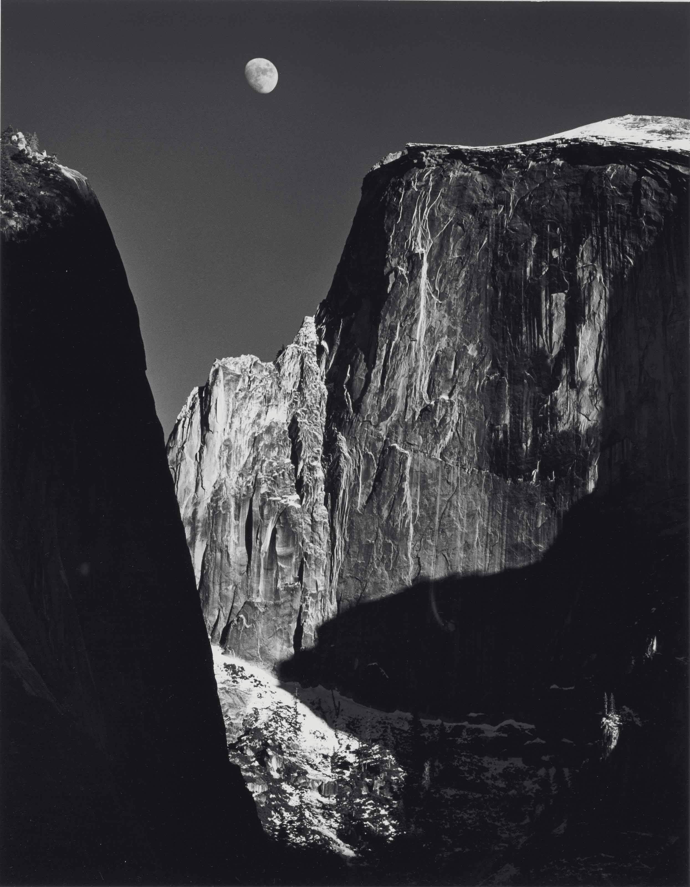

Coordinate Landscape
This is a re-imagining of Ansel Adams' well known photograph of the Moon and Half-Dome. I tried to be somewhat realistic with the shapes, because I felt that turning Adams' photography into something abstract would take away form the importance of Adams' work. Thank you Mr. Adams.

Yes!